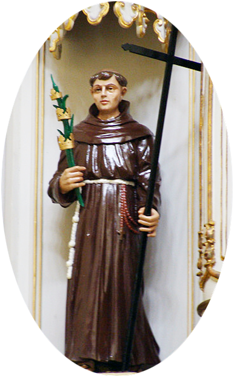
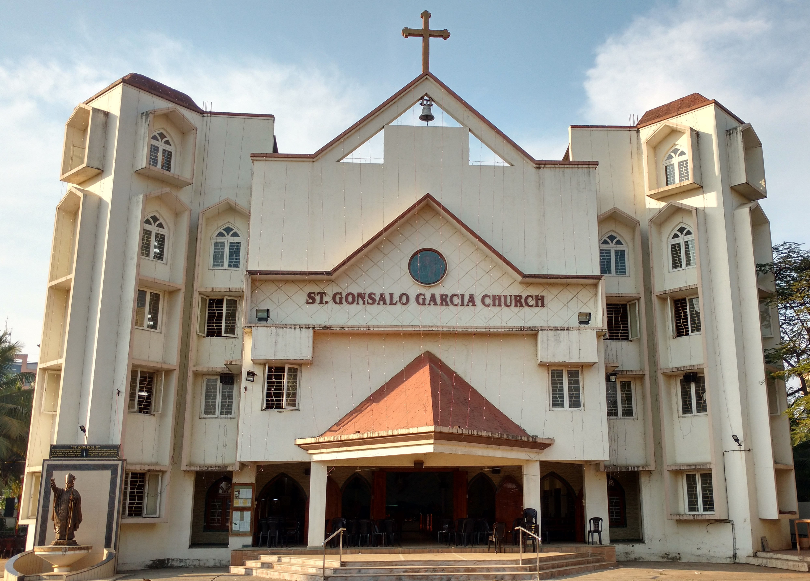
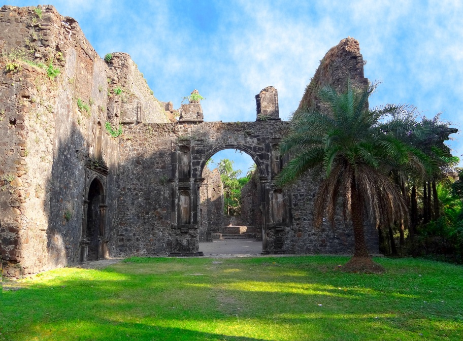

Life of Courage
How faith shaped the journey of the first Indian saint.
First Indian Saint • Martyr • Faith & Legacy

:contentReference[oaicite:4]{index=4} was born in :contentReference[oaicite:5]{index=5} and became the first Indian saint of the Catholic Church. He served as a missionary in Japan and gave his life as a martyr in 1597.
Today he inspires thousands of faithful with his courage, humility and devotion.


How faith shaped the journey of the first Indian saint.
Moments from the annual parish feast in Vasai.
What today’s generation can learn from his life.